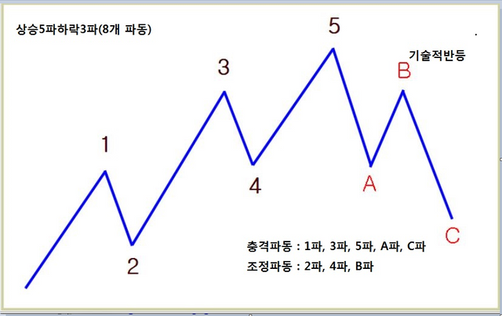

비트코인 차트 공부법
>목차
1.파동이론
주식의 가치를 매수와 매도의 힘의 차이로 결정된다고 보는 기술적 분석 방법에는 여러 가지가 있으나 그 중에 파동분석이라는 것이 있습니다.
이는 시장의 움직임을 정확히 파악하기 위함입니다.
사실 기술적 분석의 기초는 추세를 알아내는 것입니다. 이는 추세를 모르고서는 제대로 된 기술적 분석을 할 수 없다는 의미입니다.
난해한 파동이론을 시간 투자를 하여 완전히 이해(숙지)를 해서 실전에 적용해야 한다. 잘못 이해한 후에 적용하면 어리석은 투자를 하게 됩니다.

차트연습사이트